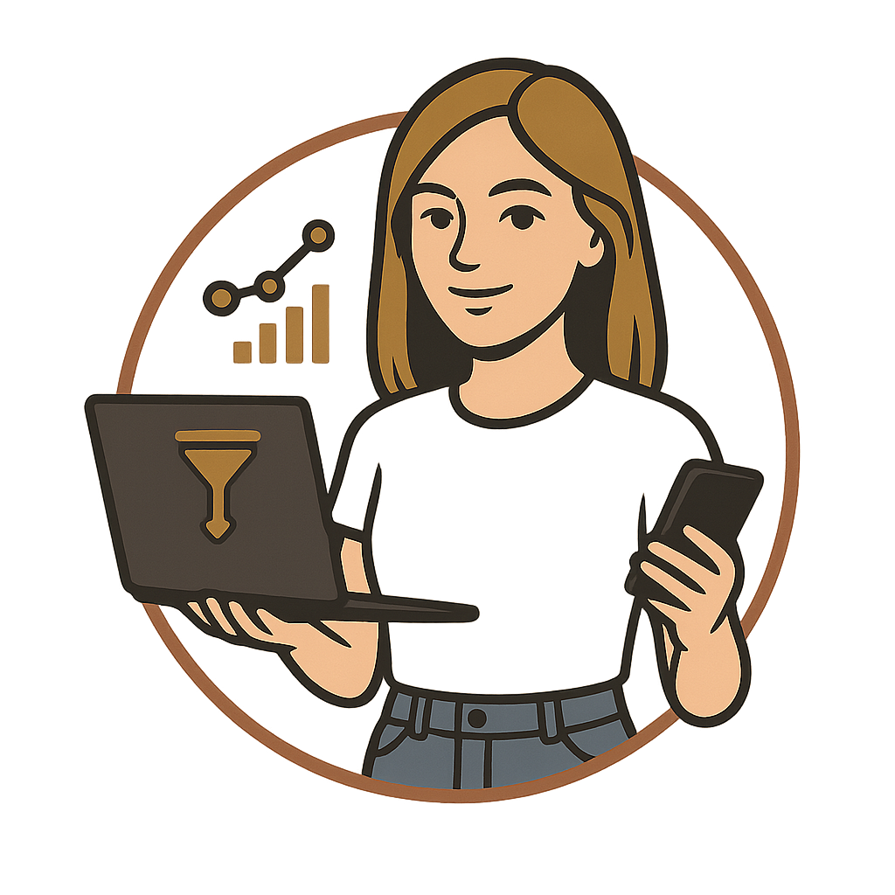

Beneficio 01
Más reuniones, no más ruido
Ayuda a enfocar la prospección en cuentas y contactos con mejor fit, para que el esfuerzo comercial vaya donde hay más probabilidad de respuesta y avance.

Brochure comercialLa app que convierte la prospección comercial en una operación continua, ordenada y medible para generar más reuniones calificadas y abrir nuevas oportunidades de negocio.
Porque crecer comercialmente no debería depender solo de más horas manuales, sino de un sistema que detecta oportunidades, activa seguimiento y da visibilidad al equipo.
Ayuda a enfocar la prospección en cuentas y contactos con mejor fit, para que el esfuerzo comercial vaya donde hay más probabilidad de respuesta y avance.
Automatiza parte importante del trabajo operativo: búsqueda, enriquecimiento, seguimiento y organización del pipeline, liberando tiempo para vender mejor.
Centraliza campañas, respuestas, leads calientes y próximos pasos, para que dirección comercial pueda tomar decisiones con información clara.
Funciona como un asistente comercial que trabaja en segundo plano y mantiene activo el flujo de prospección.
Encuentra cuentas objetivo y contactos según cargo, industria, ubicación y tipo de empresa.
Completa información clave del lead para mejorar la calidad del primer acercamiento.
Lanza campañas y seguimientos con mensajes más relevantes y consistentes.
Ordena respuestas, detecta oportunidades calientes y muestra qué conviene atender primero.
Búsqueda y segmentación de prospectos con foco en perfiles de valor para tu negocio.
Enriquecimiento de contactos para facilitar el acceso a decisores reales.
Campañas y follow-ups que mantienen el contacto sin perder consistencia.
Lectura de señales como aperturas, clics y respuestas para priorizar mejor.
Servicios B2B
Outsourcing y staffing
Consultoría y soluciones de alto valor
Equipos que necesitan más pipeline sin inflar estructura
ANTON.IA no reemplaza a tu equipo comercial: lo multiplica con más velocidad, más foco y mejor seguimiento.
Cada ejecutivo puede dedicar más tiempo a conversaciones reales y menos a tareas operativas.
El pipeline deja de depender de planillas dispersas y seguimientos manuales.
Se vuelve más fácil entender qué campañas avanzan, qué leads responden y dónde actuar.
La prospección se sostiene incluso cuando el equipo está ocupado en reuniones o cierres.
“Si hoy el crecimiento comercial depende demasiado del trabajo manual, ANTON.IA te ayuda a transformar la prospección en una operación escalable.”
Enfoque comercial y ejecutivoReuniones calificadas generadas
Tiempo desde lead detectado hasta primer contacto
Tasa de respuesta y avance por campaña
Conversión del pipeline a propuesta y cierre
Es una opción especialmente valiosa para empresas que quieren profesionalizar su prospección, abrir más conversaciones de calidad y construir un pipeline más predecible sin volver más pesada su operación.